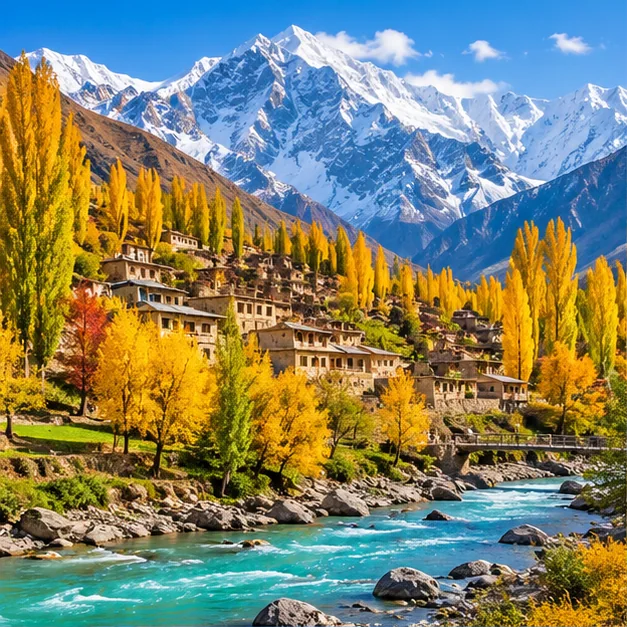
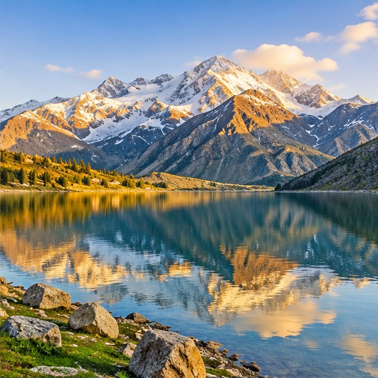
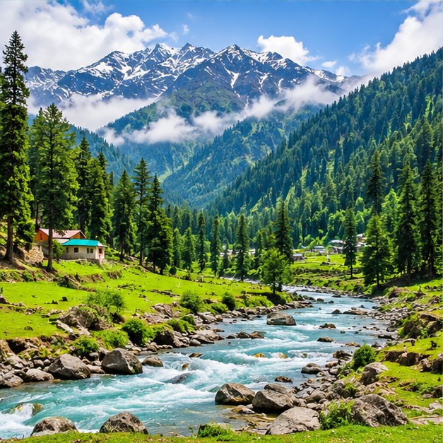
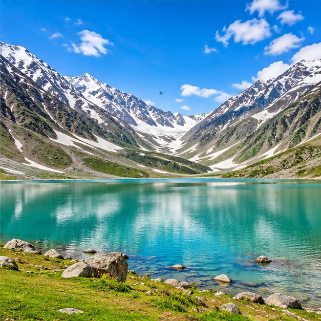

GILGIT-BALTISTANHunza Valley
↗Known for mountain panoramas, traditional villages, orchards and memorable viewpoints.
Culture · Mountain viewsView trip options
FIND A PLACE TO FALL IN LOVE WITH
From dramatic mountain scenery to peaceful green valleys, discover some of the landscapes that make northern Pakistan special.
Browse destinations
THE BEAUTY OF THE NORTHExplore a few visitor favourites and start imagining your next journey.

GILGIT-BALTISTANKnown for mountain panoramas, traditional villages, orchards and memorable viewpoints.
A scenic region of high peaks, open valleys, cold-desert landscapes and alpine lakes.

KHYBER PAKHTUNKHWAGreen hills, riverside views and mountain scenery make Swat a refreshing escape.
 KAGHAN VALLEY
KAGHAN VALLEYA popular mountain getaway with river views, green slopes and beautiful high-altitude scenery.

GILGIT-BALTISTANA nature-focused destination celebrated for open meadows and dramatic mountain scenery.
A striking blue lake framed by steep mountains, ideal for a peaceful scenic stop.
No destinations match this filter. Choose another category.
The scenic images on this student project are AI-generated illustrations for visual presentation; they are not documentary photographs of the exact locations.